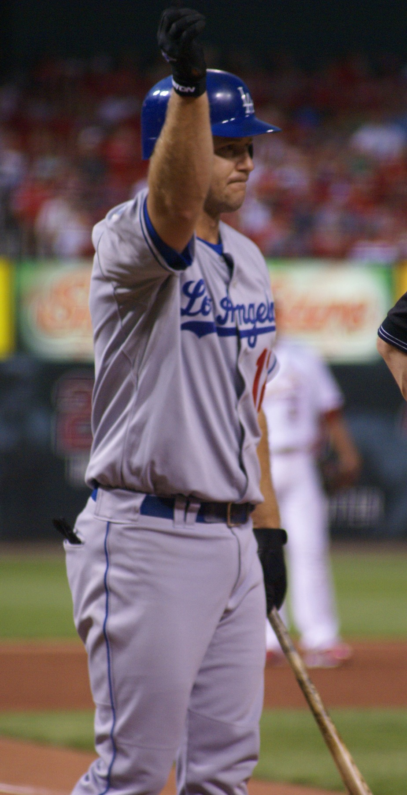
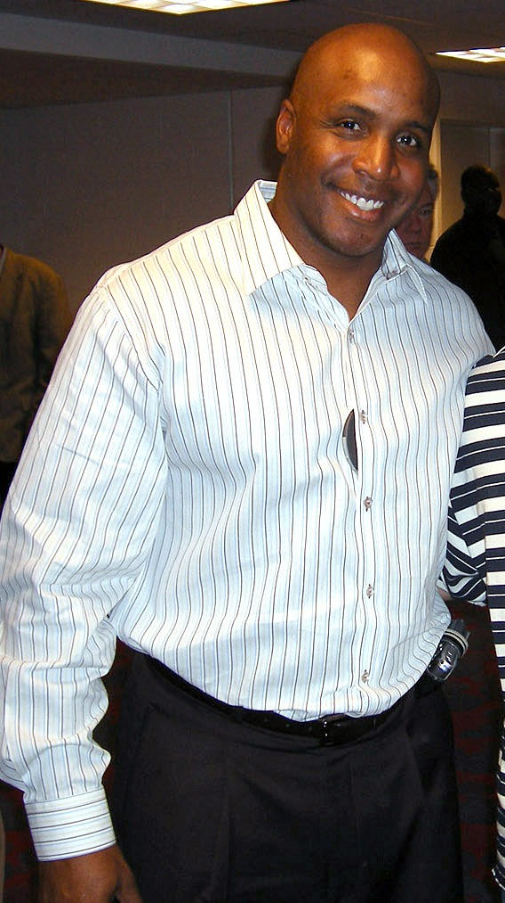

Jeff Kent: The MVP Nobody Had to Like
He won an MVP hitting behind the scariest man in baseball, banged more home runs than any second baseman who ever lived, and did not care one bit whether you enjoyed his company. Jeff Kent was exactly the Giant this city needed.

Every great lineup needs a hitter that the other team forgets about at its own peril, and for six years in San Francisco that hitter was Jeff Kent. He was not the show. Barry Bonds was the show, and Kent hit right behind him, which meant he spent his prime feasting on the fastballs pitchers were too scared to leave over the plate for the guy in front of him. He knew exactly what that arrangement was, and he made the most of it in a way that put his own name in the record book for good.
The 2000 MVP nobody predicted
In 2000 he hit .334 with 33 home runs and 125 runs batted in, and at the end of the year the writers handed him the National League MVP award. Think about that for a second. He beat out Barry Bonds, his own teammate, the most feared hitter on the planet, for the trophy. He became the first second baseman to win it since Ryne Sandberg back in 1984. It was the season that turned a very good player into a genuine Giants great, and it happened in the middle of a lineup that had no business producing two MVP candidates at once.

The best-hitting second baseman ever
Here is the number that defines his career. Kent finished with 377 home runs, and 351 of those came while playing second base, more than any second baseman in the history of the game. That is not a fluke of a single hot summer. That is two decades of a middle infielder producing the kind of power numbers usually reserved for corner sluggers. Bill Mazeroski and Ryne Sandberg had the glove and the fame. Kent had the bat that nobody at his position has ever matched.
The feud that everyone remembers
You cannot tell the Kent story without the Bonds story, because the two of them barely tolerated each other. It boiled over in the dugout in 2002, an on-camera shoving match between the two best hitters on a first-place team, and it became one of the defining images of that era of Giants baseball. They were not friends. They did not pretend to be. And somehow it worked, because both men were too proud and too competitive to let the tension cost them games. That 2002 team rode all the way to the World Series before falling to the Angels in seven, the closest Kent ever came to a ring in San Francisco.
His time with the Giants ended after that season, partly soured by a spring training motorcycle accident he initially tried to explain away, which was about the most Jeff Kent way imaginable to leave town. He was prickly, he was blunt, and he did not spend a minute of his career trying to be liked. He spent it trying to win, and to hit, and at both of those things he was one of the best this franchise ever employed.
Cooperstown, at last
For years the Hall of Fame voters could not make up their minds about him, and he fell short across his entire run on the writers' ballot. Then an era committee finally did what the numbers always argued for and elected him to Cooperstown. It was overdue. The best-hitting second baseman in the history of baseball belonged in the Hall, and the fact that he was never the easiest man in the clubhouse should not have kept him waiting as long as it did. Giants fans knew what they had. It just took the rest of the sport a while to agree.
Career Milestones- 1997Traded to the Giants, becomes the bat behind Bonds
- 2000Wins NL MVP with a .334 average, 33 homers, 125 RBIs
- 2002Dugout scuffle with Bonds, then a run to the World Series
- LaterFinishes with 377 home runs and earns a Hall of Fame call
“He did not spend a minute of his career trying to be liked. He spent it trying to win, and to hit.”
Bay Area Sports Blog- 2000 National League MVP, the first second baseman to win since 1984
- 377 career home runs, 351 of them at second base
- The most home runs by a second baseman in baseball history
- A run to the 2002 World Series alongside Barry Bonds
More: Giants section · Barry Bonds, the bat he hit behind · Bay Area sports history